Read the role
Analyze a detail page, a search result list, or a job you paste from somewhere else.
Job search, with context
Compare a saved resume with real job descriptions, reuse the useful work, and see the signals behind a match.
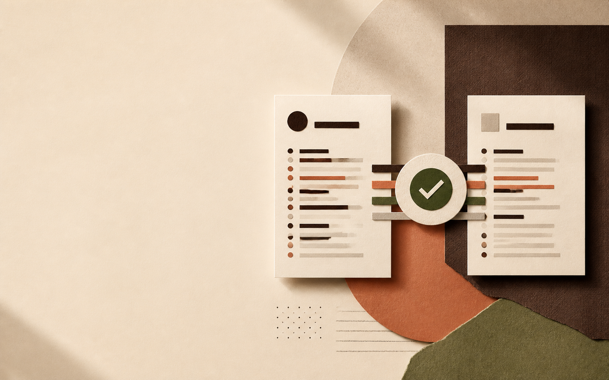
A decision surface for the work already in front of you
LinkedIn Job Match sits beside LinkedIn, reads the role you are looking at, and gives your resume a consistent place in the decision.
Analyze a detail page, a search result list, or a job you paste from somewhere else.
See the score, evidence, strengths, gaps, language, experience, and Netherlands sponsorship signals together.
Cache compatible analyses, save positions, and return to history without starting from zero.
Current LinkedIn support
The current extension reads LinkedIn's classic Jobs layout. The newer AI-powered search interface is not supported yet.
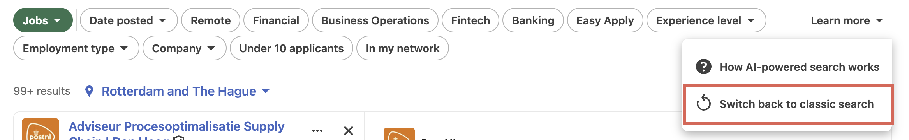
v0.3.1 preview · title signals
Language, experience, sponsorship, and the JD terms you care about can sit directly beside the job title — each in its own capsule, each with a color you can control. Keyword markers are opt-in, so the default view stays quiet.
LinkedIn job title
A compact reading layer for the classic LinkedIn Jobs surface.
In Settings, choose Default, Color-blind friendly, or Custom colors. Custom mode accepts a separate hex code for every capsule; checkboxes control the four core signals, and the keyword switch plus three marker styles shape optional keyword matches.
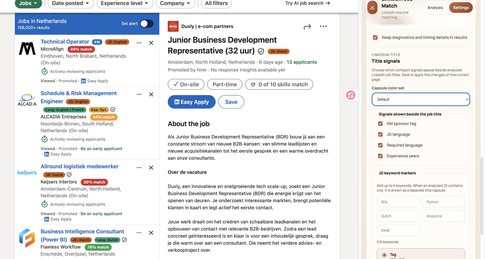
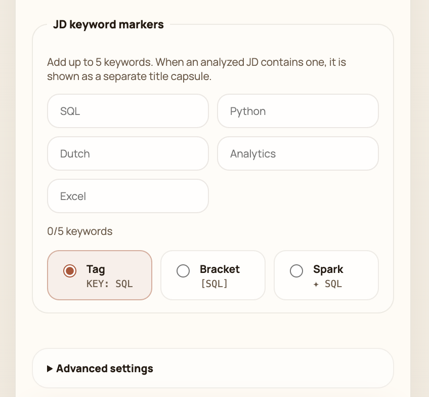
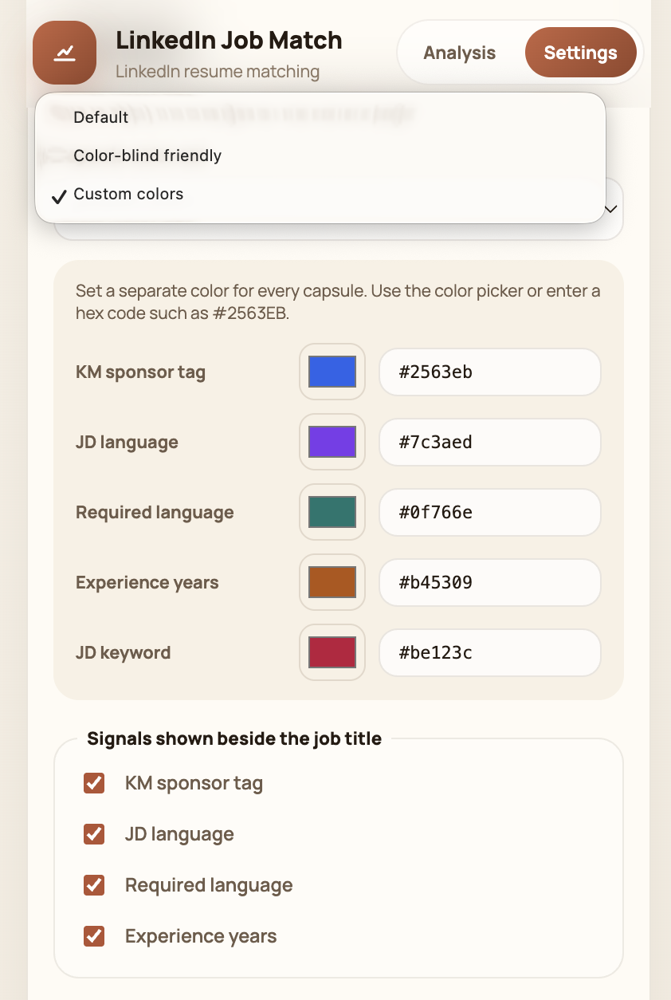
v0.3.1 provider starters
Choosing OpenAI, Anthropic, or Gemini inserts a starter into Saved models. The field stays editable, and you can add more model IDs whenever you want.
gpt-5-mini
Anthropicclaude-haiku-4-5-20251001
Geminigemini-3.5-flash-lite
v0.3.1 in practice
The same title capsules stay readable across the LinkedIn page, the current-job analysis view, list mode, and Library. The final example shows the optional keyword layer after a JD match: only matching terms become title capsules. Settings changes apply after you save and refresh the page.
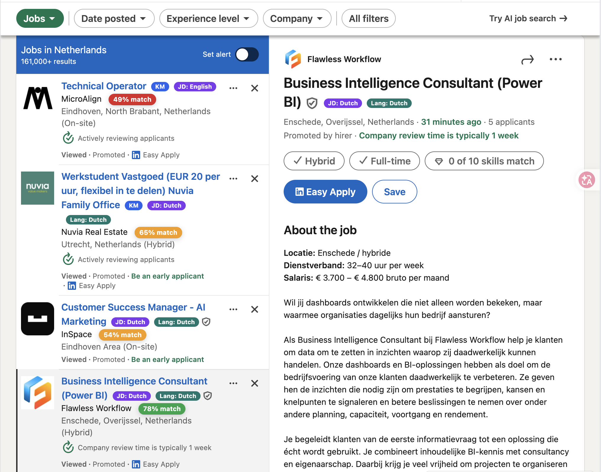
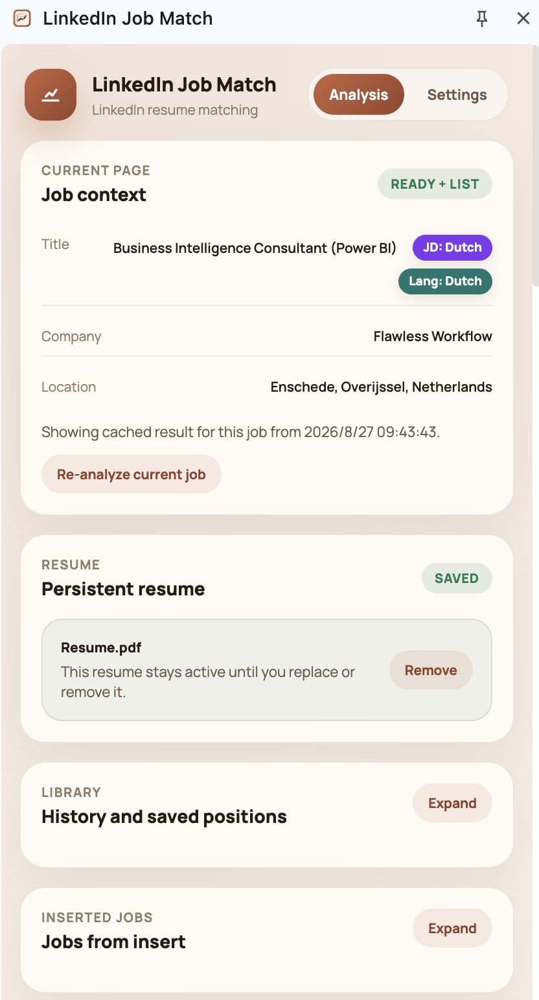
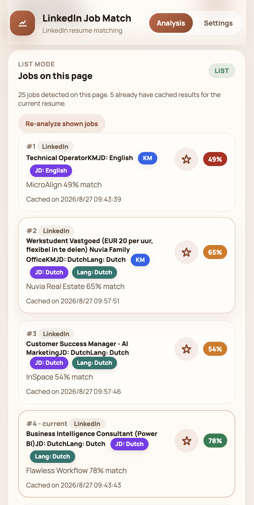
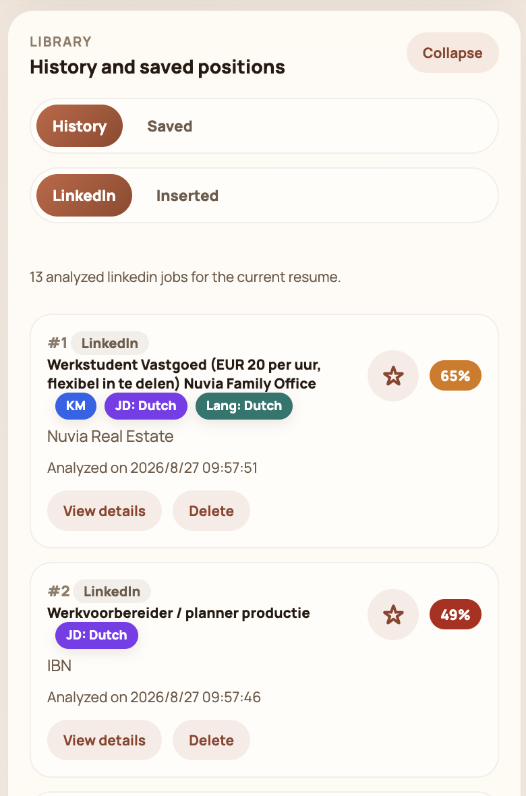
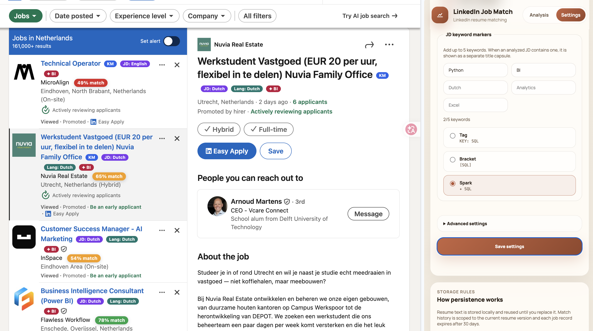
The extension stays close to the posting
Match badges stay in LinkedIn's native job surface while the side panel holds the detail you need to decide what happens next.

The useful part is the handoff
The workflow follows the questions you already ask while scanning jobs, then keeps the answer around for the next pass.
Store one resume locally until you replace or remove it.
Analyze single jobs or the visible results on a LinkedIn search page.
Save positions, revisit history, and re-analyze when the context changes.
A score is only the start
The extension breaks a result into the pieces that make a job worth pursuing, pausing, or revisiting later.
Breakdown details connect the score to evidence, strengths, gaps, and confidence impact.
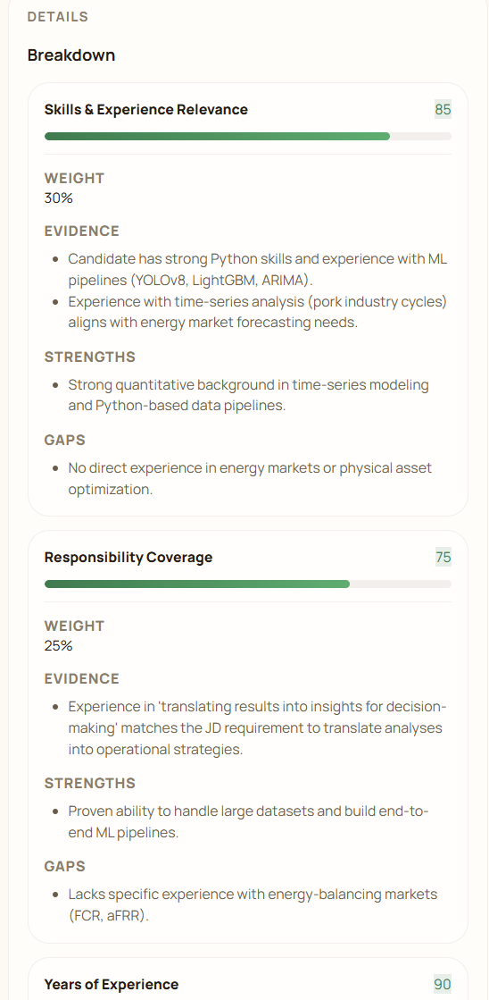
Use a local IND-derived dataset to surface Netherlands sponsorship signals as part of the context.
A screening signal, not a hiring decision.
History and saved positions let you revisit LinkedIn jobs and inserted jobs without losing the thread.
LinkedIn and pasted sources live in the same side panel.

The job does not have to live on LinkedIn
Add a job from a company site or another board, choose rule detection or model detection, review the fields, and analyze it in the same surface.
Build the extension locally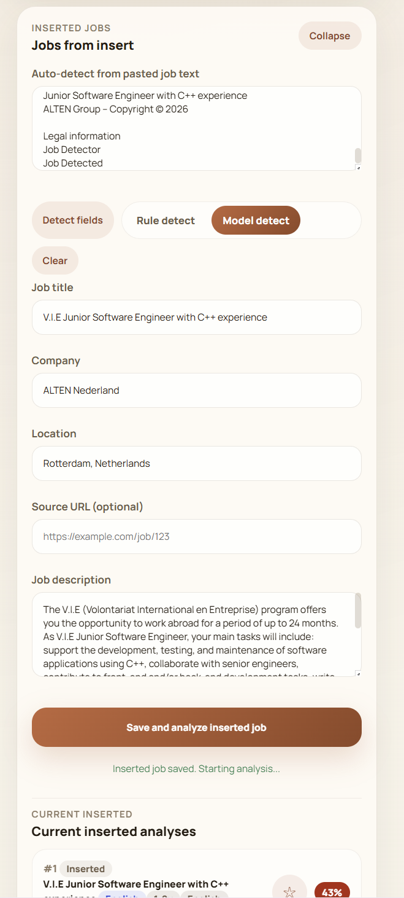
Ready when you are
Run it from source, load the built extension in Chrome, and keep your provider settings in the side panel.
npm install
npm run buildInstall dependencies and create the production-ready dist/ folder.
Open chrome://extensions/, enable Developer mode, and choose Load unpacked.
Select dist/. The repository source root is not the built extension package.
For v0.1.2+ data, extract a new ZIP into a temporary folder, replace the files in the existing Chrome extension Location, then click Reload. Loading a new folder creates separate storage.